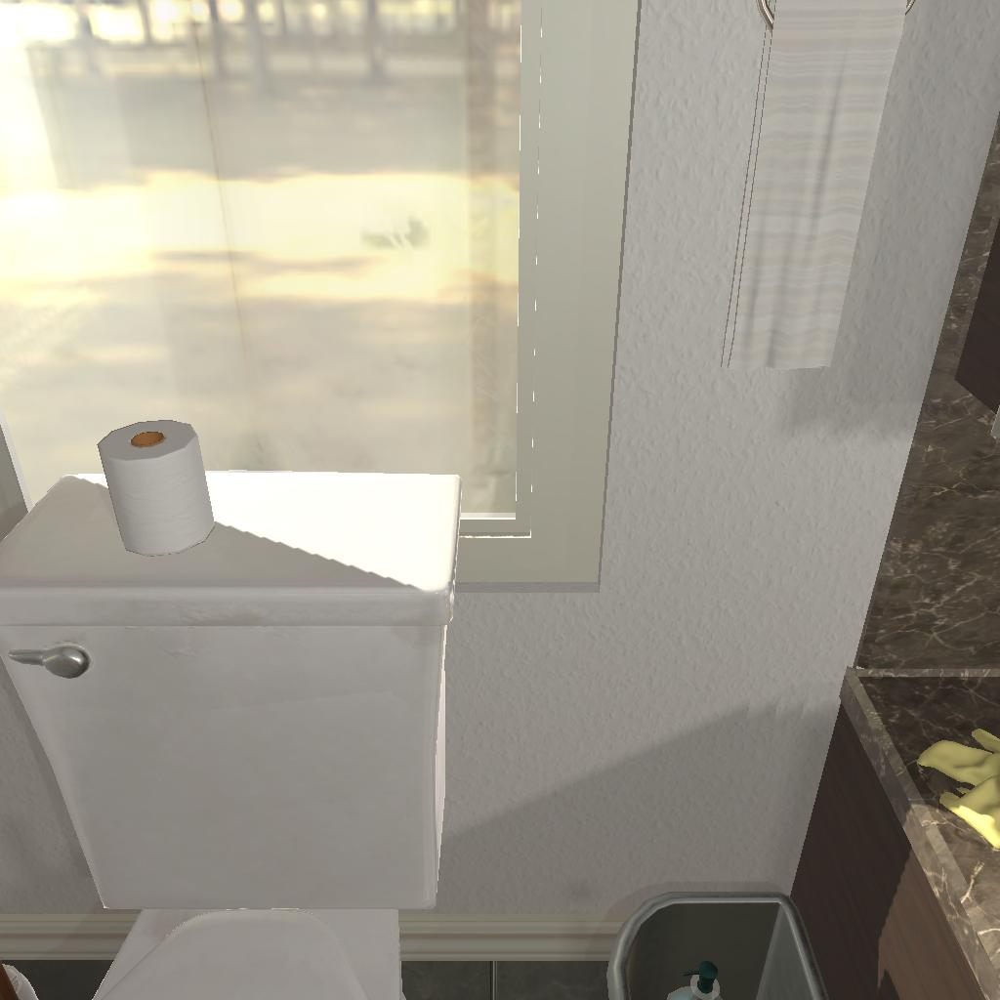

---------------------------------------------------------task: 27---------------------------------------------------------
--------------------------------------------------------------------------------------------------------------------------------------------------------------------
--------------------------------------------------------------------------------------------------------------------------------------------------------------------
Step:--------------------------------------------------------------------------4-------------------------------------------------------------------------------
----------------------------------------
VLM Prompt:
**Task**
Please perform as an embodied AI agent. Our final objective is to find two soapbottle and put them in garbagecan. Below is the plan for completing the task, the current observation, alongside historical data and admissible actions for the next step. Please determine the best action for the next step!
**Plan**
Below is a detailed step-by-step plan to complete the task.
1. Find a soap bottle.
2. Pick up the soap bottle.
3. Locate a garbage can.
4. Place the picked-up soap bottle in the garbage can.
5. Find another soap bottle.
6. Pick up the second soap bottle.
7. Return to the previously located garbage can.
8. Place the second picked-up soap bottle in the garbage can with the first one.
**Current Observation**
Displayed is an image capturing the current position of the agent.
**History Information**
Displayed are the previous observations with their corresponding actions.
State 0:
No history.
State 1:
1. Step Index in the Plan: 1
2. Objects: Soap Bottle, Toilet Tank, Toilet Paper
3. Action: go to toilet 1
State 2:
1. Step Index in the Plan: 2
2. Objects: Soap Bottle, Toilet, Toilet Paper
3. Action: take soapbottle 1 from toilet 1
State 3:
1. Step Index in the Plan: 2
2. Objects: Soap Bottle (already picked up), Trash Can
3. Action: go to garbagecan 1
State 4:
1. Step Index in the Plan: 3
2. Objects: Soap Bottle (already picked up), Trash Can
3. Action: put soapbottle 1 in/on garbagecan 1
**Admissible Actions**
(1): go to countertop 1
(2): go to sinkbasin 1
(3): go to sink 1
(4): go to drawer 1
(5): go to drawer 2
(6): go to sink 2
(7): go to sinkbasin 2
(8): go to toilet 1
(9): go to handtowelholder 1
(10): take handtowel 1 from garbagecan 1
(11): take toiletpaper 1 from garbagecan 1
(12): take cloth 1 from garbagecan 1
(13): take scrubbrush 1 from garbagecan 1
(14): take plunger 1 from garbagecan 1
**Analysis Guideline**
1. Analyze the history and current observation, and then determine our current step in the plan and our current place.
2. List all visible objects related to the task in the current observation, without summarizing any as "various items."
3. Analyze the objects in the current observation based on the history and the requirements for the current step, and then determine if we can complete the step with the current observation.
4. Analyze and decide on the most appropriate action to take.
5. Summarize the analysis using the following format: "Analysis: [The summarization of the analysis], The Most Appropriate Action: (i which is the integer.): [Selected action]"
**Notes**
1. We must complete each step of the plan in order and cannot skip steps when the previous ones are not finished.
2. For "Go to" actions listed as "go to xxx [n]", interpret this as there are n distinct actions available: "go to xxx 1", "go to xxx 2", ..., "go to xxx n". Select one specific action from these options instead of using "go to xxx [n]".
3. If receptacles such as drawers, cabinets, and so forth are closed in the current observation, we may try to open them.
4. Pay attention to synonyms and ensure clarity in the terms used.
5. We must determine and provide the single action which must be in the **Admissible Actions**.
6. If there is no history available, we are at the first step and the current place is "Unknown".
**Answer**
Please select the most suitable action by following the **Analysis Guideline**, keeping the above **Notes** in mind.
----------------------------------------
----------------------------------------
VLM Response:
Analysis: According to the plan and history, we have just completed step 4, which was placing the first picked-up soap bottle in the garbage can. The current step in the plan is step 5, where we need to find another soap bottle. In the current observation, we are in a bathroom setting, and we can see a toilet, a roll of toilet paper on top of the toilet tank, and a trash can with a blue bottle partially visible. This blue bottle resembles the shape and size of a typical soap bottle, which is related to our task. Since we've previously interacted with a trash can and the plan does not include taking items from the trash, we can assume that the bottle in the trash can is not the soap bottle we are meant to find next. Therefore, we need to search for another soap bottle that has not been previously located or interacted with.
Based on the objects in the current observation and the admissible actions, there is no action that directly relates to finding or picking up another soap bottle. To proceed, we should move to a location where we might find a soap bottle, such as a countertop or sink basin, as these are typical places where soap bottles are located.
Given the admissible actions, "go to countertop 1" seems like the most appropriate action, as countertops commonly have soap bottles on them in a bathroom setting.
The Most Appropriate Action: (1): go to countertop 1
----------------------------------------
----------------------------------------
>>> Refine VLM Response and Get Pure Action: go to countertop 1
----------------------------------------
-----------------------------------------------------------------
Running time: 18.558743953704834 seconds
Total Money: 0
-----------------------------------------------------------------
-----------------------------------------------------------------
Summarization Prompt:
**Context**
Analysis: Since there is no history information, we are at the first step in the plan, which is to find a statue. The current place is unknown. In the current observation, we see a floorlamp next to an armchair with a small table that has a small object on it, which could potentially be the statue we are looking for. Since the plan requires us to find a statue first and it appears there might be one on the table next to the armchair, we should investigate this object to determine if it is the statue we need.
The Most Appropriate Action: (1): go to armchair 1
**Summary**
1. Step Index in the Plan: 1
2. Objects: Floorlamp, Armchair, Small Table, Small Object (potential statue)
3. Action: go to armchair 1
**Context**
Analysis: According to the plan and history, we have just completed step 4, which was placing the first picked-up soap bottle in the garbage can. The current step in the plan is step 5, where we need to find another soap bottle. In the current observation, we are in a bathroom setting, and we can see a toilet, a roll of toilet paper on top of the toilet tank, and a trash can with a blue bottle partially visible. This blue bottle resembles the shape and size of a typical soap bottle, which is related to our task. Since we've previously interacted with a trash can and the plan does not include taking items from the trash, we can assume that the bottle in the trash can is not the soap bottle we are meant to find next. Therefore, we need to search for another soap bottle that has not been previously located or interacted with.
Based on the objects in the current observation and the admissible actions, there is no action that directly relates to finding or picking up another soap bottle. To proceed, we should move to a location where we might find a soap bottle, such as a countertop or sink basin, as these are typical places where soap bottles are located.
Given the admissible actions, "go to countertop 1" seems like the most appropriate action, as countertops commonly have soap bottles on them in a bathroom setting.
The Most Appropriate Action: (1): go to countertop 1
Please summarize the context by following above examples when providing the summary, and ensure that only the summary is included, without any extra explanation.
**Summary**
-----------------------------------------------------------------
-----------------------------------------------------------------
Summarization Response:
1. Step Index in the Plan: 5
2. Objects: Toilet, Toilet Paper, Trash Can, Blue Bottle (partially visible)
3. Action: go to countertop 1
-----------------------------------------------------------------
-----------------------------------------------------------------
Text Observation:You arrive at loc 0. On the countertop 1, you see a faucet 1, a cloth 1, a soapbar 1, and a soapbottle 2.
-----------------------------------------------------------------
UNSUCCEED